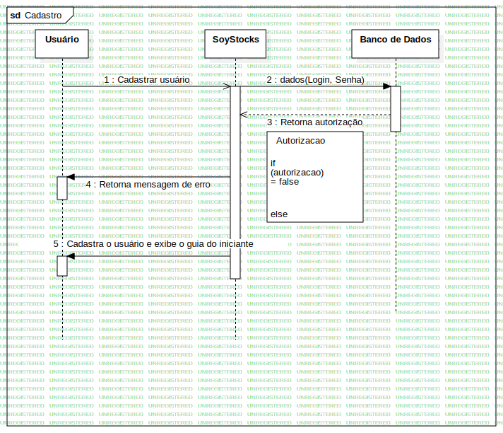

Interaction1
UMLInteraction
Untitled
::
Sequencia
::
Interaction1
Description
none
Diagrams

Cadastro
Participants
Usuário
SoyStocks
Banco de Dados
Messages
Cadastrar usuário (Usuário→SoyStocks)
dados (SoyStocks→Banco de Dados)
Retorna autorização (Banco de Dados→SoyStocks)
Retorna mensagem de erro (SoyStocks→Usuário)
Cadastra o usuário e exibe o guia do iniciante (SoyStocks→Usuário)
Properties
Name
Value
name
Interaction1
stereotype
null
visibility
public
isReentrant
true
Owned Elements
Cadastro